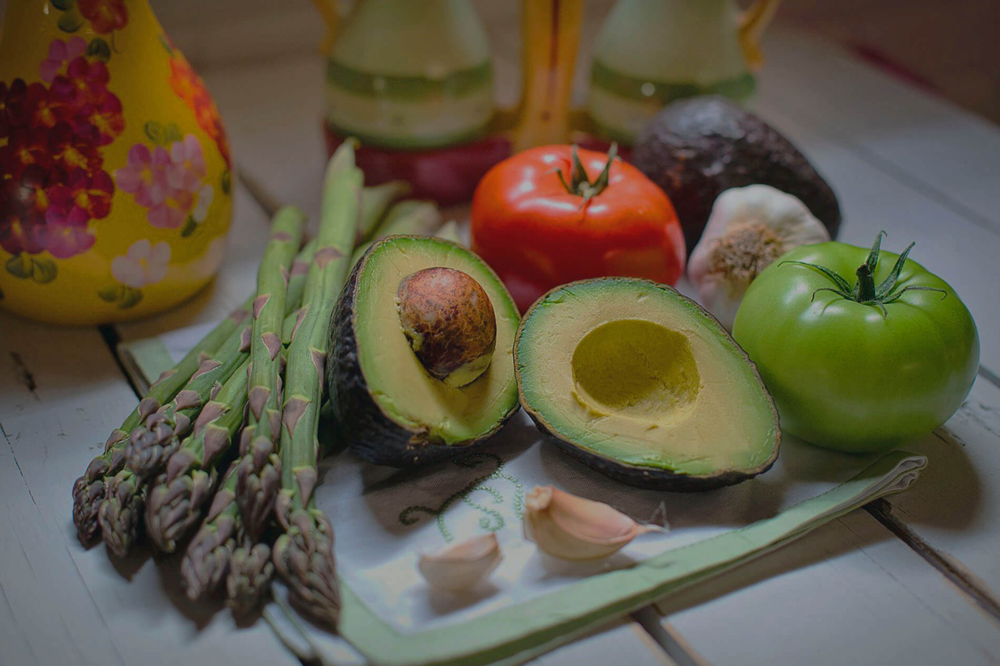
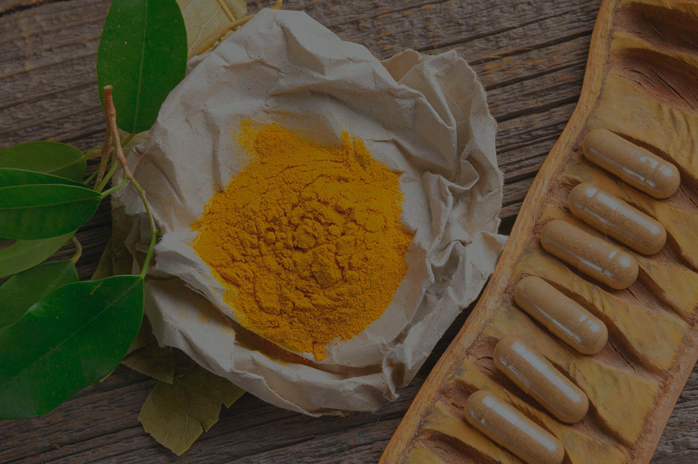
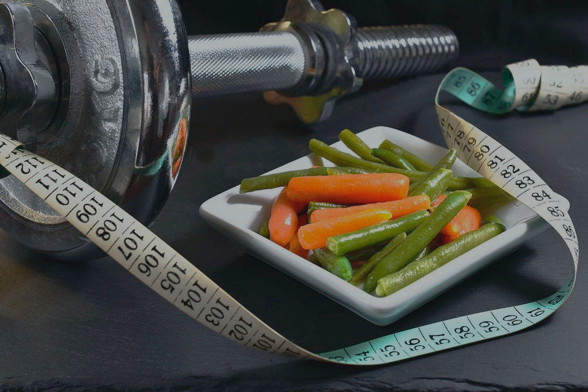

-
Olá, sejam bem vindos!Você merece o melhor que a nutrição pode lhe oferecer.
-

Nutrição clínicaPoder do equilíbrio nutricional.
-

FitoterapiaEm conjunto com a nutrição gerando benefícios.
-

Nutrição esportivaMelhore seu desempenho físico.
-
EquilíbrioTratamento humanizado para o seu bem estar.
Sobre
Sou Daiana Freitas, nutricionista pós graduada em Nutrição Clínica e Fitoterapia pela Universidade Federal do Rio de Janeiro (UFRJ).
Nutricionista por paixão e amor a profissão. Atuo com atendimento em consultório, com foco no tratamento de doenças crônicas, melhora da vitalidade, desintoxicação, emagrecimento e performance. Meu atendimento é baseado em evidências, acredito na busca do equilíbrio, no estímulo a hábitos de vida saudáveis em uma nutrição sem modismos e humanizada.
Meu objetivo profissional é guiar cada paciente nesse lindo processo de mudança e transformação, trazendo saúde e conhecimento, além de mostrar os caminhos para evolução no tempo certo de cada indivíduo. Eu escolhi ser nutricionista, pois escolhi mudar vidas!
Procuro sempre estar atualizada, exercendo, assim, uma nutrição em excelência.
Clientes satisfeitos
A melhor de sempre, atenciosa, dedicada, tem paciência com os alunos, uma ótima profissional. Recomendo de olhos fechados! Douglas Alencar F. da Silva
É tão atenciosa, se todos os profissionais fossem assim seria tão bom. Alessandra Braga de Souza
Excelência no atendimento, competência, extrema atenção ao cliente e no acompanhamento pós consulta. Silvio Dias Tadim
Você é ótima, estou me sentindo outra. Beijos. Iracema Carvalheira
Colocar uma camisa que não cabia mais em mim é muito gratificante. Anderson Felipe P. Guimarães
Super simpática, atenciosa, gente muito boa. Wanessa Machado Anunciação
Excelente profissional, muito competente e comprometida com os resultados dos pacientes. Consultório com excelente localização. Carlos Eduardo P. da Silva
Super profissional e muito atenciosa. Gostei muito do atendimento. Super indico para quem quer uma nutricionista de qualidade. Valéria dos Santos Leira
A nutricionista Daiana, me deixou muito a vontade para que eu pudesse colocar meus problemas relacionados ao meu excesso de peso. Jacy da Silva Improta
Recomendo! Atenciosa, criteriosa, antenada, as melhores dicas e orientações, acompanhamento vip e resultados incríveis! Denise Bacos Marroig
Estou amando ela... Ela é maravilhosa. Josilane Marinho de Lima
Você é incrível. Parabéns e muito obrigada por fazer parte disso tudo. Larissa Lira C. Pereira
Obrigada minha nutri querida, pelo carinho e motivação. Tathiana Duarte F. Canelas
Nutri, você é uma benção na minha vida. Você é maravilhosa, tem uma energia tão boa que só por isso já da vontade de voltar. Gloria Maria de Souza F. Araújo
Consultório
O consultório está localizado em um excelente espaço na Av. Geremário Dantas 807 (Pechincha, Rio de Janeiro), dispondo de instalações modernas e com amplo espaço de estacionamento. Além disso, o nosso espaço é de fácil acesso e possui um clima acolhedor, para proporcionar aos pacientes uma experiência única e inesquecível.
{kind=link}
{kind=link}
{kind=link}
{kind=link}
{kind=link}
{kind=link}
{kind=link}
{kind=link}
Blog
Hábitos para uma visa saudável
Fazer dieta não é a única solução. Restrições alimentares rígidas não funcionam sempre, ninguém faz dieta o tempo todo. É preferível fazer pequenas mudanças que possam ser mantidas para sempre. Isto irá melhorar seu equilíbrio e sua saúde alimentar.
Linhaça
O poder de cura da Linhaça é conhecido desde a antiguidade. Trata-se de um alimento funcional que previne inúmeros problemas de saúde. Por ser um alimento biogênico, consegue em pouco tempo, com o consumo adequado, "gerar e desenvolver a vida".
10 conselhos nutricionais que valem ouro
Uma alimentação saudável é aquela que além de ser fonte de nutrientes, envolve valores culturais, sociais, afetivos e sensoriais (aparência, aroma, textura e sabor), confira alguns conselhos que valem ouro.
Serviços
Nutrição clínica
Serviço nutricional voltado para suporte ao tratamento de doenças crônicas ou não, cujo é realizado um diagnóstico nutricional minucioso para elaboração do plano alimentar individualizado que atenda às necessidades do paciente.
Nutrição esportiva
Serviço nutricional voltado com o objetivo de alcançar novos níveis dentro do seu esporte de preferência, aumentando seu desempenho físico, otimizando a recuperação pós exercício e promovendo a saúde.
Exame de bioimpedância
Serviço voltado para realização de uma análise completa da composição corporal, é um método moderno e de alta precisão. Ele possibilita medir o percentual de gordura, massa magra, gordura visceral, água corporal, idade metabólica e outros indicadores que facilitarão na avaliação e criação do plano alimentar personalizado.
Fitoterapia
É o método de tratamento caracterizado pela utilização de plantas medicinais em suas diferentes preparações. A Fitoterapia em conjunto com a nutrição pode gerar benefícios no tratamento de diversos problemas de saúde.
Rotulagem nutricional
Serviço voltado para empresas de acordo com normas da ANVISA onde são desenvolvidas as informações que devem estar presente nos rótulos dos alimentos, bebidas e que permite ao consumidor conhecer sobre suas propriedades nutricionais.
Consulta online
As consultas acontecem por vídeo chamada mesma qualidade dos atendimentos presenciais, a diferença que não é realizada a avaliação física por bioimpedância. Para o acompanhamento são utilizadas outras técnicas, de acordo com a disponibilidade do paciente.